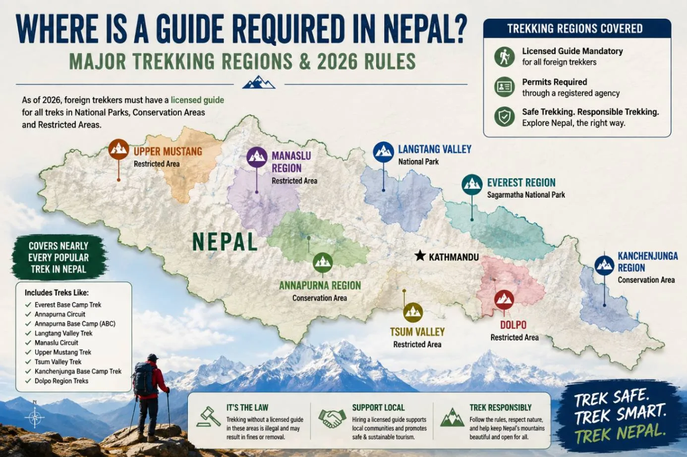
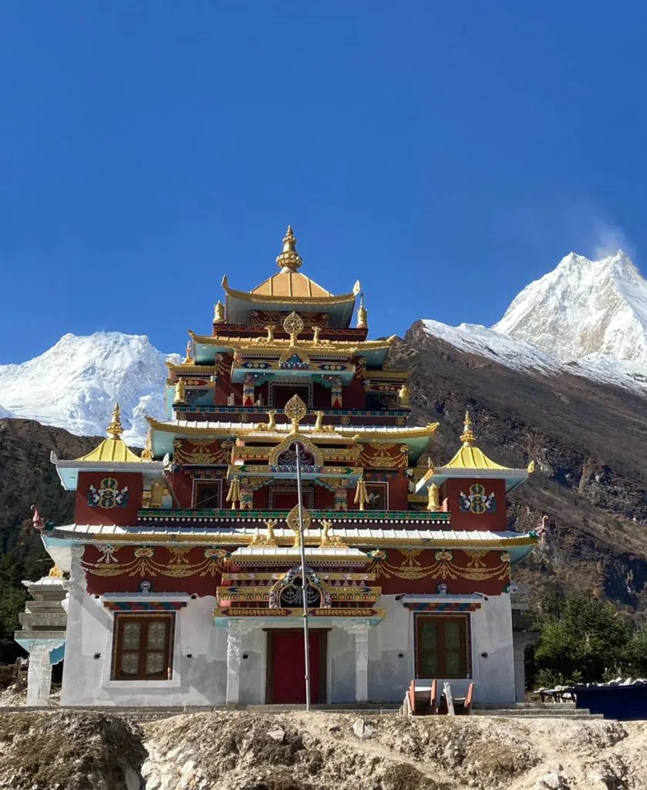
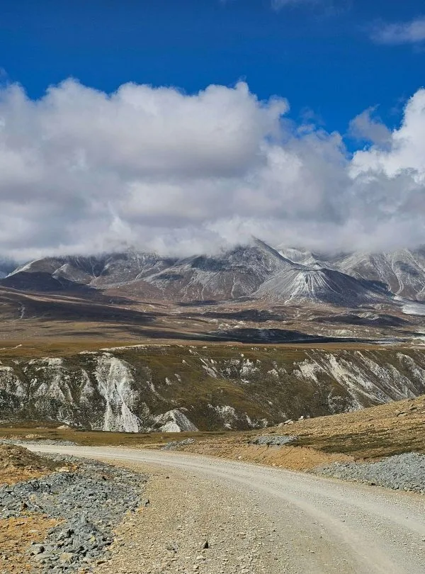
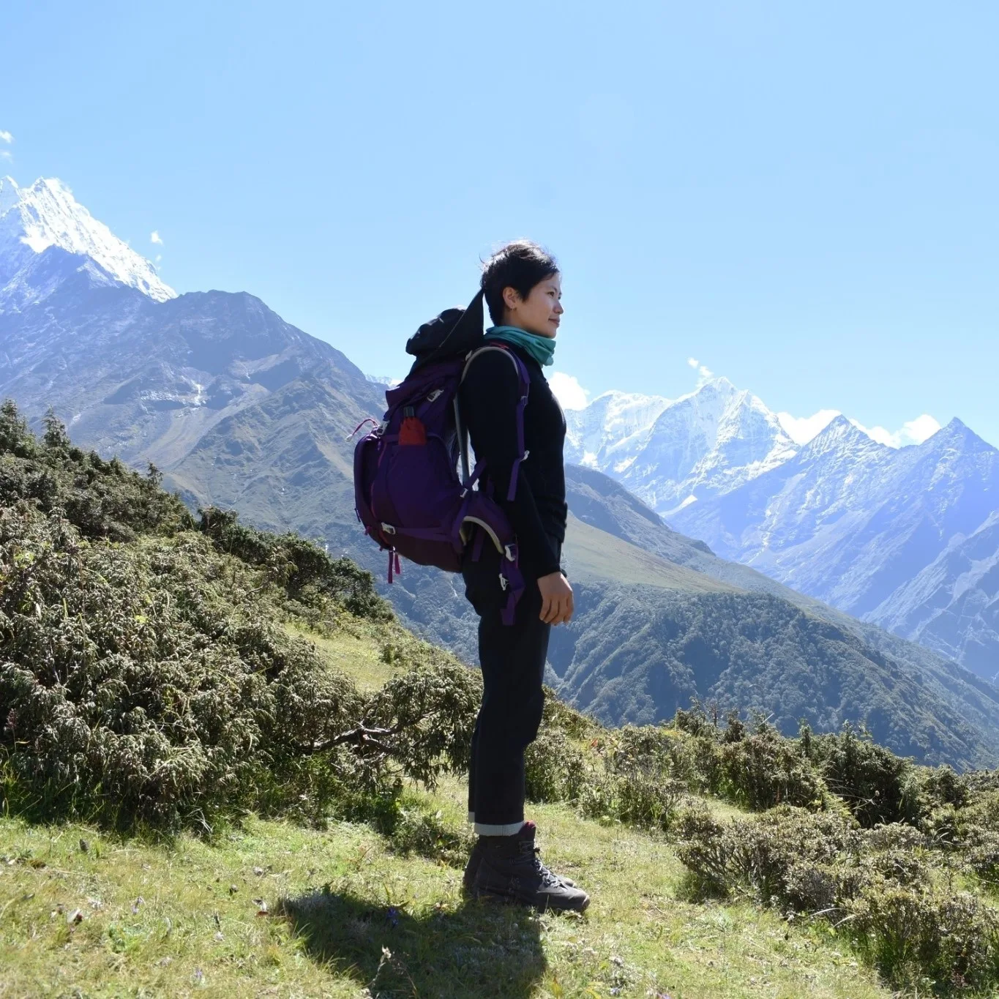
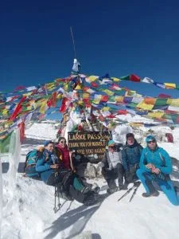

1. The Legal Reality: Can You Trek Solo in Nepal's Restricted Areas?

If you are an independent backpacker dreaming of setting off with just a map and backpack into the mysterious walled kingdom of Upper Mustang, the rugged gorges of the Manaslu Circuit, or the remote monasteries of Upper Dolpo, you must understand Nepal's legal framework: pure solo, independent trekking is strictly forbidden by law.
Under the directives of the Nepal Department of Immigration (DoI) and the Ministry of Home Affairs, several Himalayan border zones carry a special "Restricted Area" status. In these declared zones, the government strictly enforces three non-negotiable statutory rules:
- The Minimum Group Rule (Rule of Two): A Restricted Area Permit (RAP) will never be issued to an individual solitary applicant. The immigration system requires a minimum manifest of at least two foreign passport holders applying together under an authorized agency.
- Mandatory Government-Licensed Guide: You cannot self-guide under any circumstances. Trekkers must be accompanied at all times by a professional guide certified by the Nepal Academy of Tourism and Hotel Management (NATHM) and registered with the Trekking Agencies Association of Nepal (TAAN).
- Mandatory Registered Agency Filing: Independent travelers cannot apply directly at the immigration counter. All applications must be officially submitted, verified, and backed by a legally registered Nepali trekking agency like Igloo Himalaya Treks.
Do not confuse the general April 1, 2023 Nepal Tourism Board (NTB) nationwide guide mandate with Restricted Area rules. While NTB made guides mandatory for standard conservation areas (like Annapurna and Langtang), local authorities in Everest (Khumbu) continue to allow independent hikers. In Restricted Areas, however, the 2-trekker and licensed-guide rule is an act of parliament managed by the Department of Immigration and enforced by military and Armed Police Force checkpoints. There are zero local exemptions.
At entry checkpoints along the trail—such as Jagat (Manaslu), Kagbeni (Upper Mustang), Dunai (Dolpo), and Taplejung (Kanchenjunga)—police and military personnel thoroughly examine physical permits, cross-check passport numbers against the manifest, and register the accompanying guide's license card. Entering without an authentic permit and licensed guide results in immediate deportation from the region, severe financial fines, and possible blacklisting by immigration.
2. Why Does Nepal Restrict These Himalayan Regions? (Border & Cultural Preservation)

Travelers often ask why Nepal imposes such stringent regulations on these specific trails while allowing open access to the Everest and Annapurna base camps. The restrictions exist for four fundamental historical, geopolitical, and ecological reasons:
1. Geopolitical Border Sensitivity
Virtually all restricted zones directly border the Tibet Autonomous Region of China. High Himalayan passes historically served as ancient salt-trading thoroughfares and, during the 1960s and 1970s, as strategic bases for Tibetan Khampa resistance fighters (particularly in Mustang). To preserve strict international border neutrality, prevent unauthorized cross-border movement, and monitor foreign activity along remote frontiers, the Ministry of Home Affairs maintains active military checkposts and tightly regulated permits.
2. Preservation of Fragile, Ancient Himalayan Cultures
Valleys like Upper Mustang, Tsum Valley, and Upper Dolpo are living cultural museums. In Mustang's walled capital of Lo Manthang, classical Tibetan Buddhist civilization, royal customs, and ancient dialects thrive largely unchanged since the 14th century. In Dolpo, communities still practice ancient Bonpo traditions that predate Buddhism. In Tsum Valley, locals adhere to the sacred Shyagya code—a centuries-old covenant prohibiting the slaughter of animals, hunting, and setting fires in sacred groves. Regulating visitor numbers protects these sacred traditions from the commercial dilution seen along heavily trafficked tourist circuits.
3. Ecological Protection of Fragile Trans-Himalayan Ecosystems
The trans-Himalayan rain shadow comprises fragile high-altitude desert ecosystems that heal very slowly from human disruption. These remote valleys serve as vital habitats for endangered wildlife, including the elusive snow leopard, Himalayan blue sheep (bharal), musk deer, and Tibetan wolves. Strict permit fees and guide oversight ensure that waste management protocols are followed and wildlife corridors remain undisturbed.
4. High-Altitude Safety and Extreme Wilderness Logistics
Restricted regions feature formidable mountain geography with zero vehicular access, unpredictable weather, and extreme passes crossing well above 5,000 meters—such as Larkya La (5,106m) in Manaslu and Kang La (5,320m) in Nar Phu. Medical clinics are non-existent, and communication dead zones can stretch for days. Requiring a licensed guide ensures that high-altitude illness is recognized early, emergency descent protocols are followed, and search-and-rescue teams can locate hikers immediately if disaster strikes.
3. Complete Breakdown of Nepal's Restricted Areas & Permit Fee Structure (2026/2027)
Below is the authoritative reference guide to Nepal's declared restricted trekking zones, including current 2026/2027 permit fee structures, conservation area requirements, and seasonal regulations:
| Restricted Trekking Zone | Special Permit Fee (RAP) | Additional Conservation / NP Permit | Mandatory Group & Guide Rule | Optimal Season |
|---|---|---|---|---|
| Upper Mustang (Kagbeni to Lo Manthang & Chhoser) |
$500 USD/person (first 10 days) + $50 USD/person/day thereafter |
ACAP Permit (NPR 3,000 / ~$23 USD) | Min 2 foreigners + Licensed Guide | March to November (Prime rain-shadow trek) |
| Manaslu Circuit (Jagat to Dharapani via Larkya La) |
Autumn (Sept–Nov): $100/wk + $15/day Winter–Spring (Dec–Aug): $75/wk + $10/day |
MCAP (NPR 3,000) + ACAP (NPR 3,000) | Min 2 foreigners + Licensed Guide | March to May & September to November |
| Tsum Valley (Lokpa to Mu Gompa & Nile) |
Autumn (Sept–Nov): $40/first 8 days + $7/day Winter–Spring (Dec–Aug): $30/first 8 days + $7/day |
MCAP Permit (NPR 3,000 / ~$23 USD) | Min 2 foreigners + Licensed Guide | March to May & September to November |
| Upper Dolpo (Juphal to Shey Gompa & Saldang) |
$500 USD/person (first 10 days) + $50 USD/person/day thereafter |
Shey Phoksundo National Park (NPR 3,000) | Min 2 foreigners + Licensed Guide | April to October (Alpine trans-Himalaya) |
| Lower Dolpo (Juphal to Phoksundo Lake & Ringmo) |
$20 USD/person per week + $5 USD/person/day thereafter |
Shey Phoksundo National Park (NPR 3,000) | Min 2 foreigners + Licensed Guide | April to October |
| Kanchenjunga Circuit (North & South Base Camps) |
$20 USD/person per week (first 4 weeks), $25/wk thereafter |
KCAP Permit (NPR 3,000 / ~$23 USD) | Min 2 foreigners + Licensed Guide | March to May & October to November |
| Nar Phu Valley (Koto to Phu & Kang La Pass) |
Autumn (Sept–Nov): $100/wk + $15/day Winter–Spring (Dec–Aug): $75/wk + $10/day |
ACAP Permit (NPR 3,000 / ~$23 USD) | Min 2 foreigners + Licensed Guide | March to May & September to November |
| Humla / Limi Valley (Simikot to Hilsa Tibet border) |
$50 USD/person per week + $10 USD/person/day thereafter |
Local rural municipality entry fee | Min 2 foreigners + Licensed Guide | May to October |
| Ruby Valley / Ganesh Himal (Border zones of Gorkha & Rasuwa) |
$10–$20 USD/person per week (depending on exact rural boundary) |
Langtang NP or MCAP Permit | Min 2 foreigners + Licensed Guide | March to May & October to November |
4. The 3 Legal Pathways for Solo Trekkers in Restricted Areas

Given that the Department of Immigration will not issue a permit to a single individual, how do solo travelers actually trek these routes? In the Nepali trekking industry, there are three proven, legal pathways:
Pathway 1: Group Joining (Open Departures)
How it works: You contact a registered agency like Igloo Himalaya Treks and request to be placed into an existing scheduled departure group on your target dates.
- Major Advantages: Substantially cheaper. You split the daily wages of your licensed guide and porter with fellow trekkers, as well as private transportation costs (such as 4WD jeeps).
- The Trade-offs: Fixed departure calendar dates and fixed daily itineraries. You must hike at the pace of the collective group and stay in pre-selected teahouses.
- Best for: Social solo travelers on standard travel budgets with flexible start dates.
Pathway 2: Private Trek via Two Permits ("Ghost Permit")
How it works: You hire a private certified guide through an agency and pay for two Restricted Area Permits under your booking dossier to satisfy immigration quotas.
- Major Advantages: Complete privacy, customized daily itinerary, flexible walking pace, and total control over teahouse selections and rest days.
- The Trade-offs: Higher cost. You must pay for both statutory permits yourself and cover 100% of the guide and transport expenses.
- Best for: Photographers, fast hikers, remote workers, or travelers who cherish solitude and schedule freedom.
Deep Dive: How the "Ghost Permit" Route Actually Works
The term "ghost permit" is colloquial trail jargon for paying the statutory government fees for two permits to meet the immigration minimum quota. Here is the operational reality:
- Legality & Revenue: The Government of Nepal receives 100% of the required permit revenue for two individuals. The agency registers your primary passport alongside an authorized second passport slot, and the official Department of Immigration stamps and QR codes are issued legitimately.
- Checkpost Procedure: Along the trail, your licensed guide carries the official stamped permit manifest. If checkpoint officials note that only one foreign trekker is physically present, the guide explains that the second registered companion fell ill, experienced a travel delay, or cancelled before the trek commenced. Because the paperwork is genuine, verified, and accompanied by a licensed guide, checkposts validate the stamp and allow you through.
- Cost Implication: On the Manaslu Circuit, buying a second autumn permit adds approximately $100–$145 USD to your total budget. In Upper Mustang or Upper Dolpo, it adds the full $500 USD permit fee. For many solo travelers, this added fee is well worth the luxury of a private expedition without being tied to stranger group dynamics.
Pathway 3: Finding a Trekking Partner Online Prior to Arrival
If you want private group pacing but cannot afford paying for two permits, you can find a trekking partner ahead of time through platforms like TrekkingPartners.com, TripAdvisor Nepal forums, or specialized Himalayan travel groups on Facebook. Once you agree on dates and routes, both travelers submit their passport copies to Igloo Himalaya Treks, and we handle the unified permit filing and guide dispatch.
5. Step-by-Step Permit Application Process for Solo Travelers
Obtaining a Restricted Area Permit requires strict adherence to bureaucratic immigration protocols. Because individual tourists are barred from applying independently at the immigration counter, your registered trekking agency handles the entire administrative process. Here is what the workflow looks like:
Required Documentation Checklist
- Original Physical Passport: Scans, digital photos, and photocopies are strictly rejected by the Department of Immigration in Kathmandu. Your physical passport must be surrendered to the immigration desk for manual inspection and permit attachment.
- Valid Nepal Tourist Visa Stamp: You must have already cleared immigration at Tribhuvan International Airport (TIA) or an overland border post and possess an active Nepal tourist visa stamp in your passport.
- Digital Passport-Style Photographs: Two passport-sized photos with a white background (can be taken quickly in Thamel for NPR 300).
- Specific Trekking Itinerary: Exact entry and exit dates, designated checkpost points, and confirmed trailhead route details.
- Agency Documentation: The applying agency provides its company tax clearance certificate, central bank foreign exchange registration, licensed guide insurance credentials, and an official letter of guarantee.
Because the Department of Immigration requires your original physical passport, your RAP cannot be processed before you land in Nepal. The application takes 24 to 48 business hours. Furthermore, the immigration office in Kalikasthan is closed on Saturdays and official public holidays. Solo travelers must build at least two full business days in Kathmandu into their itinerary prior to starting their trek.
6. Realistic Cost Breakdown: Solo Trekker vs. Group Trekker
Cost is the biggest deciding factor for solo travelers evaluating restricted area treks. When you trek solo with a private guide, you bear 100% of the guide wage, porter wage, and private transport fees. When you join a group, these fixed overheads are shared.
Below is a realistic side-by-side cost comparison for a standard 14-Day Manaslu Circuit Trek:
| Expense Category | Solo Trekker (Private / 2 Permits) | 2-Trekker Group (Per Person) | 4-Trekker Group (Per Person) |
|---|---|---|---|
| Restricted Area Permit (RAP) | $205 USD (Pays for 2 permits: $100 + $15/day) | $130 USD | $130 USD |
| Conservation Permits (MCAP + ACAP) | $60 USD | $60 USD | $60 USD |
| Certified Guide ($35/day x 14 days) | $490 USD (100% borne by solo) | $245 USD | $122.50 USD |
| Licensed Porter ($25/day x 14 days) | $350 USD (100% borne by solo) | $175 USD | $87.50 USD |
| Trailhead Transport (4WD Jeep) | $240 USD (Private jeep share/bus combo) | $140 USD | $70 USD |
| Teahouse Lodging & Single Supplement | $150 USD (~$11/night single room) | $90 USD (Twin share) | $80 USD (Twin share) |
| Meals & Hot Drinks ($30/day x 14 days) | $420 USD | $420 USD | $420 USD |
| Agency Logistics, Tax & Insurance | $180 USD | $120 USD | $95 USD |
| Estimated Total Trip Cost | ~$2,095 USD | ~$1,380 USD | ~$1,065 USD |
What About Upper Mustang? On a 14-day Upper Mustang trek, the difference is more pronounced because the RAP is $500 USD per person. A solo trekker purchasing two permits will invest approximately $2,750 to $3,200 USD for a private guided expedition, whereas joining a group of two or three brings the per-person cost down to roughly $1,750 to $1,950 USD.
7. Solo Female Trekking in Nepal's Restricted Areas: Safety, Culture & Sherpa Guidance

Nepal is globally recognized as one of the safest travel destinations in Asia for solo women. In the high Himalayas, violent crime and harassment are virtually non-existent. Indigenous mountain communities adhere to Buddhist and Hindu principles of hospitality, treating guests with deep respect and warmth.
Cultural Safety in Remote Mountain Communities
Unlike crowded urban environments, remote restricted valleys like Manaslu, Tsum, and Mustang operate on tight-knit community networks. Teahouse owners are matriarchs who manage village lodges and take great personal pride in making solo female travelers feel protected and welcome.
Certified Female Guides
If you are a solo female traveler who prefers the comfort and companionship of a female guide, Igloo Himalaya Treks can pair you with a licensed female mountain guide certified by the Nepal Academy of Tourism and Hotel Management. Female guides provide exceptional leadership, bridge conversations with local village women, and ensure complete comfort during teahouse overnights.
Practical Tips for Solo Women on Remote Trails
- Securing Single Rooms: While double occupancy is standard in teahouses, solo trekkers can request a private single room by paying a small surcharge (NPR 500 to 1,000 / $4–$8 USD). Teahouse doors feature internal slide latches; carry a lightweight padlock for extra peace of mind when leaving your room.
- Menstrual Hygiene in Sub-Zero Climates: Remote restricted trails have no western pharmacies or disposal bins. Pack sufficient biodegradable sanitary products and heavy-duty ziplock disposal bags with odor-neutralizing baking soda. Menstrual cups are highly recommended if you have access to boiled drinking water for sanitization.
- Cultural Dress Etiquette: Traditional Buddhist and Tibetan communities value modesty. Avoid hiking in revealing athletic shorts or tight tank tops. Wear loose-fitting, quick-dry trekking pants and sleeved base layers. When entering sacred monasteries (gompas), always cover your shoulders and knees and remove your footwear.
8. Wilderness Safety, Altitude Management & Emergency Evacuation in Remote Corridors

Trekking alone with a private guide through restricted regions carries significant wilderness responsibility. Unlike the Everest highway where teahouse lodges and helicopter pads appear every few kilometers, restricted regions are raw, isolated, and unforgiving.
Altitude Acclimatization Schedules
High passes in restricted zones—such as Larkya La (5,106m), Kang La (5,320m), and Numa La (5,309m)—exceed the altitude of Mont Blanc. Acute Mountain Sickness (AMS) can develop rapidly if you rush your ascent.
- The 300–500m Rule: Above 3,000 meters (9,840ft), never increase your sleeping altitude by more than 500 meters in a single day.
- Mandatory Rest & Acclimatization Days: On the Manaslu Circuit, spending two nights in Samagaon (3,530m) or Samdo (3,860m) is vital before attempting Dharmasala and Larkya La. In Upper Mustang, spend an extra day exploring the caves and cliff monasteries around Lo Manthang (3,840m).
- Hydration & Medication: Drink 3.5 to 4 liters of purified water daily. Carry Acetazolamide (Diamox 125mg) to assist with altitude acclimatization under your guide's supervision.
Satellite Communication & Cellular Blackouts
Expect zero cellular signal (neither NTC nor Ncell) for 4 to 8 consecutive days through northern Manaslu, Upper Dolpo, and Kanchenjunga.
Satellite Messengers (Garmin inReach / ZOLEO): While handheld satellite phones require complex telecommunications permits in Nepal, personal satellite messengers (like Garmin inReach Mini) are permitted for safety. Ensure your device is registered and your emergency contacts are briefed. Igloo Himalaya Treks guides carry satellite tracking or high-frequency radios for emergency dispatch.
Emergency Helicopter Evacuation in Restricted Border Zones
Here is a critical safety fact that most booking agencies fail to disclose: helicopter rescues in restricted areas require special military and civil aviation security clearances.
Because these valleys lie directly adjacent to the international border with China, the Civil Aviation Authority of Nepal (CAAN) and the Ministry of Home Affairs must issue an emergency flight clearance before a rescue helicopter can enter border airspace. If you trek with an inexperienced independent freelancer, securing this clearance can take hours or even days. With Igloo Himalaya Treks, our 24/7 Kathmandu operations desk liaises directly with government authorities, military air bases, and helicopter charters to ensure rapid airborne evacuation if a medical emergency arises.
Your travel insurance policy must explicitly cover high-altitude mountaineering and trekking up to 6,000 meters with emergency helicopter search and rescue. Ensure your policy includes direct payment guarantee (cashless billing) to avoid having to front $3,000 to $5,000 USD in personal funds for emergency aircraft dispatch.
9. Best Alternative Treks for True Independent Solo Trekkers
If paying for two restricted area permits or hiring an agency support team does not align with your travel philosophy or budget, Nepal offers world-class non-restricted alternatives where independent solo trekking is fully accessible:
1. Everest Base Camp & Gokyo Lakes
Region: Khumbu Pasang Lhamu Rural Municipality
- Solo Legal Status: The local Sherpa government operates an autonomous permit system and welcomes independent solo trekkers. No 2-person group rule.
- Trail Infrastructure: Incredible luxury and standard lodges, heated dining rooms, bakeries, Wi-Fi, and well-marked trails with heavy foot traffic.
- Highlights: Reaching Everest Base Camp (5,364m), climbing Kala Patthar (5,644m), and crossing Cho La Pass to the cobalt-blue Gokyo Lakes.
2. Annapurna Base Camp (Sanctuary)
Region: Annapurna Conservation Area
- Solo Legal Status: Requires ACAP entry permit (NPR 3,000). While NTB guidelines recommend a guide, the trail is densely populated with lodges and clearly marked.
- Trail Infrastructure: High lodge density every 1 to 2 hours of walking, hot showers, and rich multinational camaraderie.
- Highlights: Standing inside a 360-degree glacial amphitheater of 7,000m and 8,000m giants: Annapurna I (8,091m), Machapuchare, and Hiunchuli.
If you want wild Himalayan scenery, Tibetan-style Buddhist culture, and deep mountain valleys without the high permit fees of restricted zones, explore the Langtang Valley Trek (8 Days). Located just north of Kathmandu, it features dramatic yak pastures, ancient monasteries at Kyanjin Gompa (3,870m), and side climbs of Kyanjin Ri and Tserko Ri (5,033m).
10. Essential Packing & Gear Strategy for Remote Restricted Expeditions
Because restricted area teahouses are basic family-run lodges lacking commercial amenities, your packing list requires specialized self-sufficiency. You cannot simply buy replacement gear or gear repairs on trail past the district roadheads.
Alpine Warmth & Technical Gear
- 4-Season Sleeping Bag (-15°C to -20°C): Teahouse blankets at high camps (like Dharmasala or Chhoser) are thin and unwashed. A sub-zero down bag is mandatory.
- Heavy Down Parka (800+ Fill Power): Temperatures drop to -10°C to -15°C at high pass teahouses after sunset.
- Broken-in Waterproof Boots: Sturdy leather or synthetic boots with deep Vibram lugs and ankle support.
- Microspikes: Essential for icy moraine crossings over Larkya La (5,106m) or Kang La (5,320m).
- Trekking Poles: Telescopic poles save knees on 1,500m rocky descents.
Power, Water & Financial Logistics
- Heavy-Duty Power Bank (20,000–30,000 mAh): Teahouses charge NPR 500 to NPR 1,000 per device charge via solar banks that frequently deplete.
- Dual Water Purification: Sawyer Squeeze hollow-fiber filter combined with Katadyn Micropur Forte chlorine dioxide tablets. Single-use plastic bottles are banned.
- Cash Reserves in NPR: There are zero functional ATMs in Upper Mustang, Manaslu, or Dolpo. Carry NPR 4,000 to NPR 5,000 ($30–$40 USD) per day in crisp NPR notes.
- Personal First-Aid & Blister Kit: Diamox, Ciprofloxacin, rehydration salts, Compeed blister bandages, and an elastic compression wrap.
11. Step-by-Step Solo Trekker Planning Timeline (6 Months to Trailhead)
Executing a successful solo trek in Nepal's restricted wilderness requires disciplined chronological preparation. Follow this tested milestone schedule:
- 6 Months Before Departure — Route Selection & Physical Conditioning: Decide between group joining vs private solo trekking (2-permit route). Begin cardiovascular base building: stair climbing with a 10kg weighted daypack, trail running, and leg strength workouts.
- 3 Months Before Departure — International Flights & Passport Check: Book international flights into Kathmandu (KTM). Verify that your passport has at least 6 months of validity and at least 2 blank pages.
- 2 Months Before Departure — High-Altitude Travel Insurance: Purchase an insurance policy that explicitly guarantees helicopter search and evacuation up to 6,000 meters.
- 1 Month Before Departure — Agency Coordination & Gear Audit: Finalize dates with Igloo Himalaya Treks. Send scanned passport copies and photo files for pre-registration. Break in your hiking boots on local weekend trails.
- Days 1–2 in Kathmandu — Permit Processing & Gear Rental: Arrive at Tribhuvan International Airport, receive your tourist visa on arrival, and meet your Igloo Himalaya Treks expedition coordinator. Hand over your physical passport for Department of Immigration RAP filing. Rent down sleeping bags or parkas in Thamel.
- Day 3 — Trailhead Departure: Board your private 4WD jeep or domestic mountain flight to the trailhead accompanied by your certified Sherpa guide and begin your Himalayan expedition.
Frequently Asked Questions About Solo Trekking in Nepal's Restricted Areas
Select a category below to explore expert answers to the most common questions travelers ask about Solo Trekking in Nepal's Restricted Areas:
Difficulty & Fitness

Ready to Experience the Himalayas?
Whether you are preparing for high-altitude trekking, cultural circuits, or alpine summit expeditions, start planning a bespoke journey tailored to your fitness, travel season, and style.